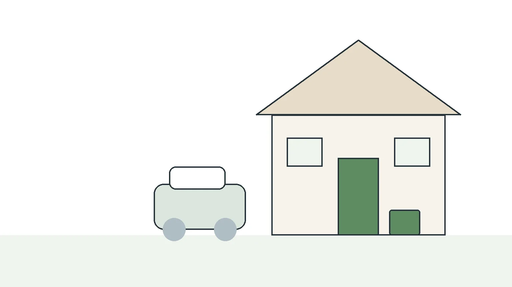
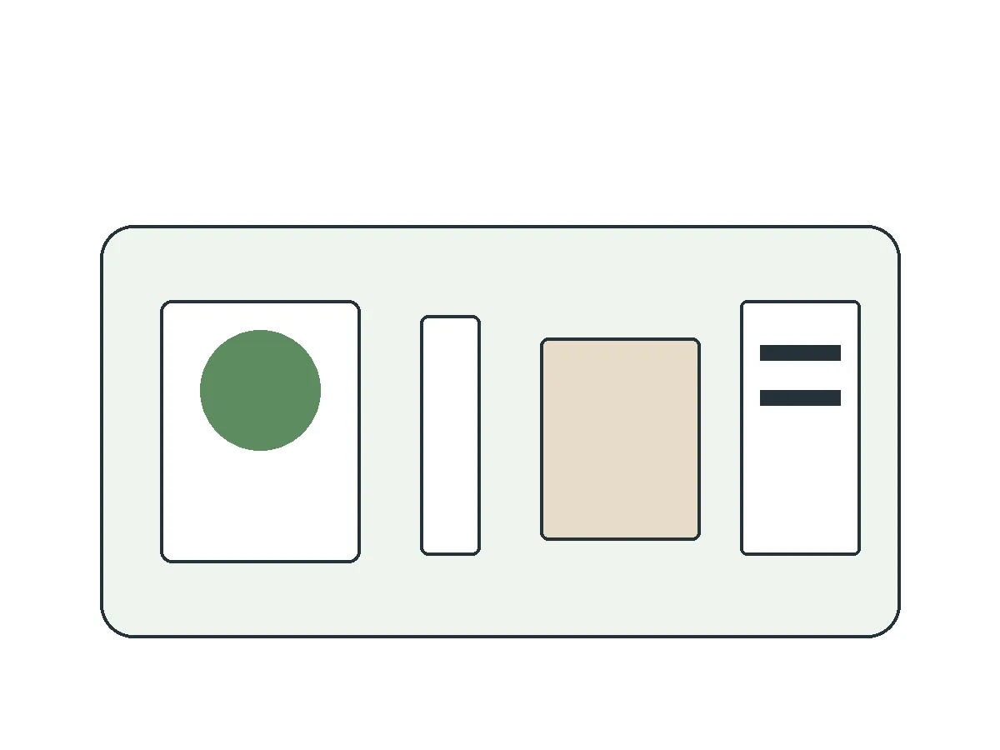
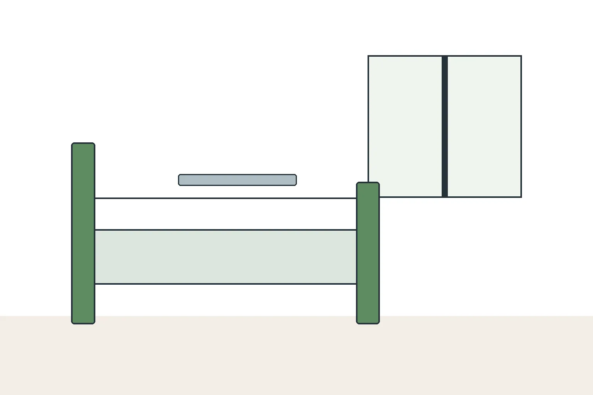
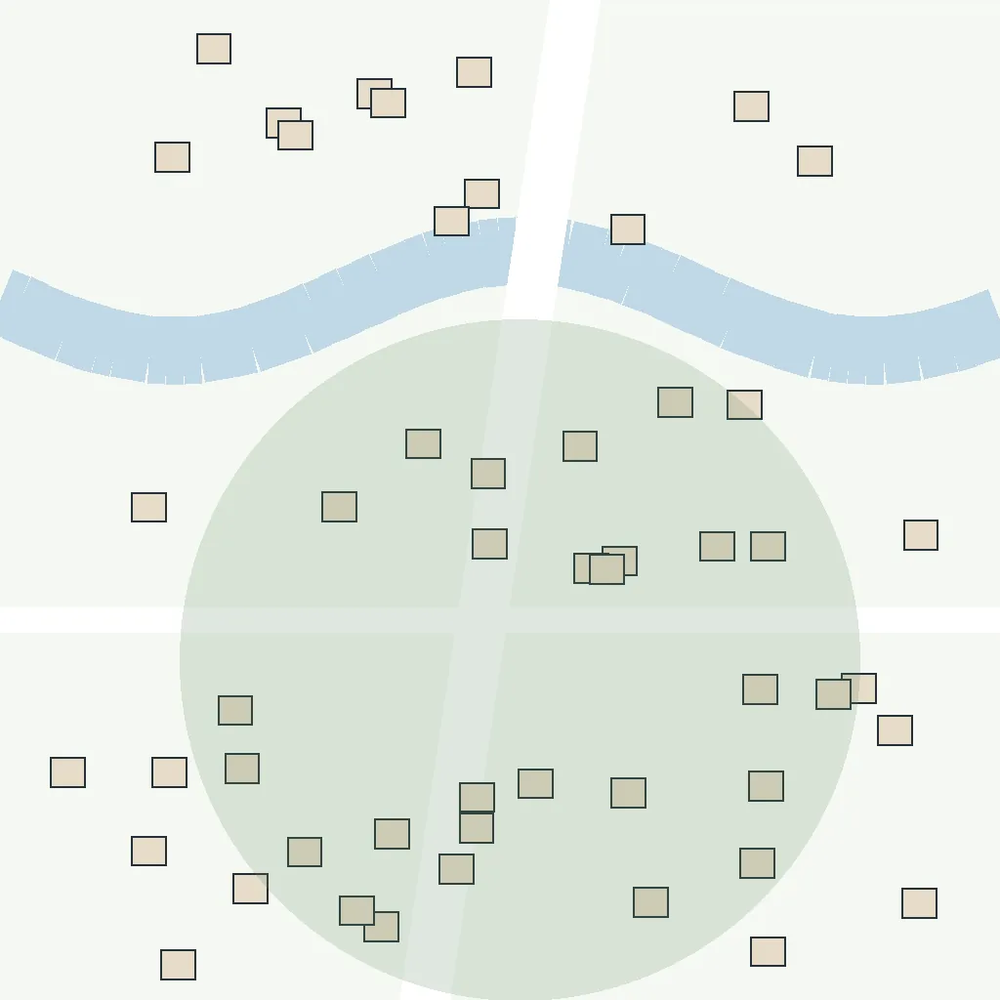
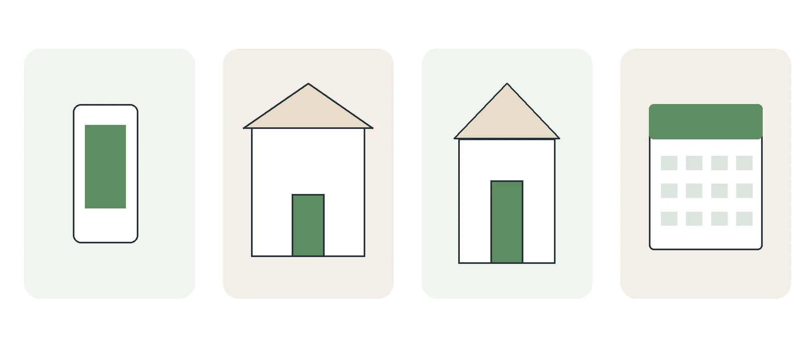

訪問看護・訪問リハビリ 架空市の東部
訪問看護を使えるか、ここで確かめられます。
看護師と理学療法士が、ご自宅を訪ねます。ご家族からの最初のお電話でよく聞かれる4つのことを、索引から順に読めます。

- 相談だけでも構いません
- こちらから利用をおすすめする電話はしません
- 返信は翌営業日までに
訪問でしてもらえること

看護師看護
- 体温・血圧・脈などの体調の確認
- お薬の管理と、飲み方の相談
- 床ずれの予防と手当て
- 点滴やカテーテルなど、医療の処置
- ご家族の介護の相談
理学療法士リハビリ
- ベッドからの起き上がりと歩く練習
- 手すりや段差など、住まいの工夫の相談
- 飲み込みや、むせにくい姿勢の練習
1回の訪問は 30〜60分です。
対象になる条件と地域
ベッドで過ごす時間が長い方も、通院が難しくなってきた方も対象です。どちらの保険になるかは、年齢・介護の認定・病気の種類で変わります。
どちらの保険でも、主治医の指示書が必要です。指示書がないうちは、訪問を始められません。
| 保険の種類 | 主な対象 | 回数の決め方 |
|---|---|---|
| 介護保険 | 要支援・要介護の認定を受けた方 | ケアプランで決める |
| 医療保険 | 介護の認定がない方など（病気の種類でも変わります） | 主治医の指示書で決める（上限は【要確認】） |

言葉の言い換え
- 主治医の指示書
- 訪問看護をしてよいという、かかりつけの医師の書類
- ケアプラン
- ケアマネジャーが作る、介護サービスの予定表
- 要支援・要介護
- 市区町村が認める、介護が必要な度合い
訪問できる地域架空市の東部5地区
- 東町ステーションのある地区
- 川沿町
- 緑ヶ丘
- 本郷
- 新田
範囲の外でも、ご相談ください。近くのステーションをご案内します。

1回あたりの自己負担
| 訪問の長さ | 1回の自己負担 |
|---|---|
| 30分未満 | 約480円 |
| 30分〜1時間 | 約830円 |
| 1時間〜1時間半 | 約1,140円 |
- 医療保険の方
- 回数や、月の最初の訪問かどうかで金額が変わります。くわしくはお電話で確かめます。
- 加算があるとき
- 初回や緊急の訪問、訪問の時間帯、24時間の連絡体制など。金額は【要確認】
- かからないもの
- 交通費はいただきません
始めるまでの4つの段階

段階 1
相談
電話かフォームで。ご本人の様子と、困っていることを伺います。
用意するもの保険の分かるもの・介護保険証（あれば）
段階 2
主治医の指示書
主治医に、訪問看護の指示書をお願いします。依頼の連絡はこちらでします。
用意するもの主治医の名前と病院名
段階 3
契約
ご自宅で、内容と料金を説明してから契約します。持ち帰って考えても構いません。
用意するもの印鑑・お薬手帳
段階 4
初回の訪問
契約で決めた曜日と時間に、最初の訪問をします。
用意するもの特になし
- 介護保険で使う方ケアマネジャーとケアプランの調整が要ります。連絡はこちらでします。
- 介護の認定がまだの方申請から結果が出るまで時間がかかります。その間のこともご相談ください。
どの段階からでも相談できます。まだ決めていなくても構いません。
条件を確認するよくある質問
利用の前
入院中から相談できますか？
できます。退院の前に、病院の相談員の方と一緒に準備を進めます。
家族だけで相談してもいいですか？
構いません。ご本人がいなくても、ご家族からの相談を伺います。
始めるとき
家族が仕事で不在でも、訪問できますか？
できます。鍵の受け渡しの方法を、契約のときに決めます。
何回来てもらえますか？
介護保険はケアプランで、医療保険は主治医の指示書で決まります。くわしくはお電話で確かめます。
利用中
夜や休日に体調が変わったら？
24時間つながる電話を用意しています（契約した方のみ。料金は【要確認】）。
途中でやめることはできますか？
いつでもやめられます。違約金はありません。
相談の方法
お電話で伺う3つのこと
- お住まいの地区
- ご本人のいまの様子
- 困っていること
手元にあると話が早いもの保険の分かるもの・介護保険証、主治医の名前と病院名、お薬手帳、ケアマネジャーの名前（いれば）。なくても相談できます。